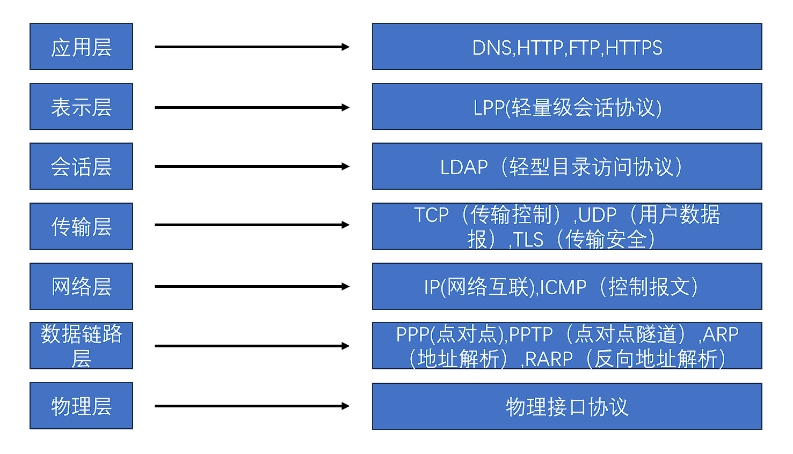
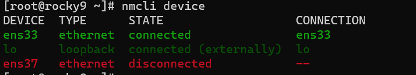
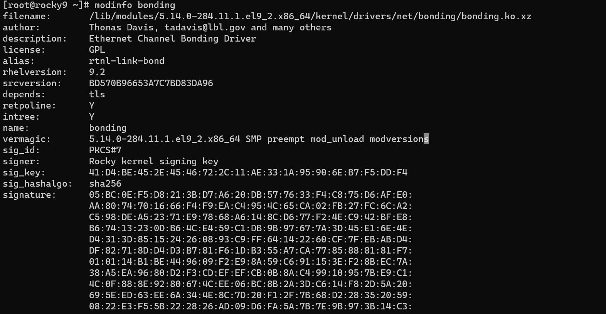
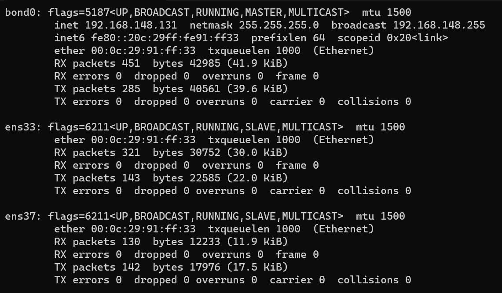
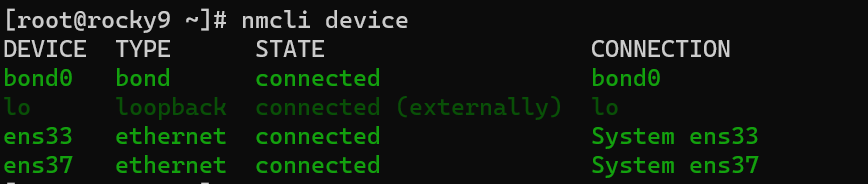
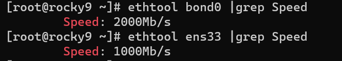
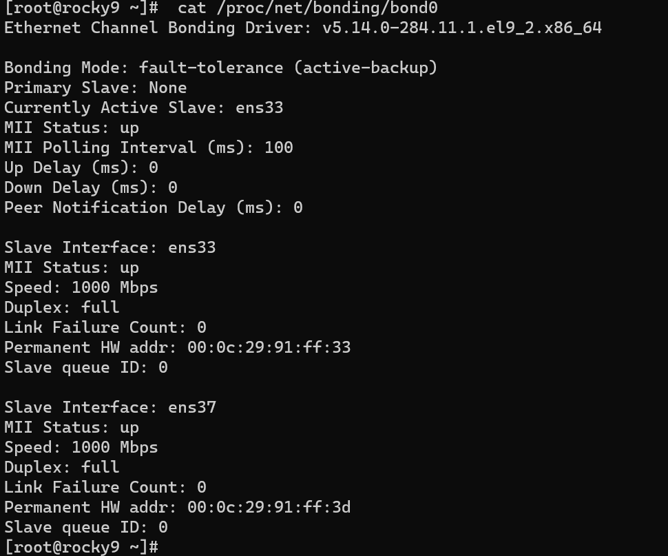
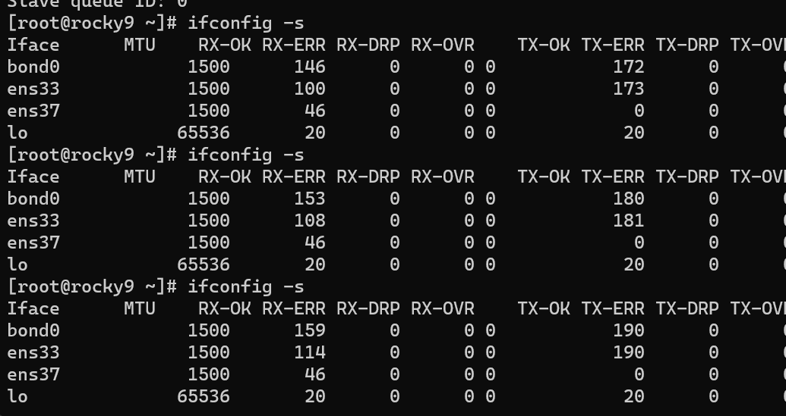
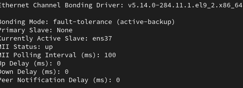

9.14
背景
1.OSI 7层模型 分别用途协议
OSI 模型把网络通信的工作分为 7 层，分别是物理层、数据链路层、网络层、传输层、会话层、表示层和应用层。
物理层:OSI模型最底层，为上层提供一个物理传输载体，以比特流数据传输
数据链路层：起到2个网络设备互相进行网络通讯功能，负责物理网络寻址（MAC）和纠错
网络层：用于将接收到的数据段从一台计算机传输到不同网络中的另一台计算机，根据地址决定数据的路径选择
传输层： 为上层协议提供端到端的可靠和透明的数据传输服务
会话层：为会话实体间创建连接，提供节点之间通信过程的协调 ，同步数据流
表示层：提供数据格式、变换和编码转换
应用层 ：是计算机用户，以及各种应用程序和网络之间的接口，其功能是直接向用户提供服务，协调各个应用程序之间的工作。

2.子网掩码 地址计算
IP由网络ID和主机ID组成
网络ID用于标识网络地址
主机ID用于标识主机
IP分类：主要用ABC类地址
网络数：2^可变网络ID数
主机数：2^主机ID位数-2(去除子网中的第一个表示子网号的IP地址和最后一个表示广播地址的IP地址)
1.私有网络
1.A类
8位网络号+24位主机号组成
range(1-126),目前保留地址10.0.0.0~10.255.255.255
127为回环地址
网络数2^(8-1)
一个a类网络最多主机数 2^24-2=16777214
1 | |
2.B类
16位网络号+16位主机号组成
range(128-191)
网络数2^(16-2)
一个B类网络最多主机数 2^16 -2=65534
1 | |
3.C类
24位网络号+8位主机号
range（192-223）
网络数2^(24-3)
一个C类网络最多主机数 2^8 -2=254
1 | |
2.子网掩码
CIDR ：IP/网络ID位数
netmask子网掩码：标识网络ID位数，是32位的二进制，对应于网络ID的位为1，对应于主机ID的为0 （需转成10进制）
1 | |
举例1：以201.224.192.144/23 计算该主机所在网络主机数，子网掩码
主机数=2^(32-23)-2=510
子网掩码：11111111.11111111.11111110.00000000
255.255.254.0
例2： 192.168.222.200 子网掩码255.255.240.0列出CIDR网络位数，主机数
CIDR：192.168.222.200/20
主机数： 2^(32-20)-2=4094
3.网络ID
网络ID为IP与子网掩码相与
与运算
1 | |
任何数与0都为0，与1保留原值
例3：以201.224.192.144 子网掩码 255.255.254.0计算网络ID
1 | |
11001001.11100000.11000000.10010000
11111111.11111111.11111110.00000000
网络ID即为：
11001001.11100000.11000000.0000000
转换十进制
1 | |
得到网络ID：201.224.192.0
广播地址为x.x.x.最大主机数+1
4.判断是否在同一网段
以A,B为例
A：192.168.114.2/23 1110010 .00000001
B：192.168.115.241/29
如果A访问B，则
A与自己子网掩码相与 得到192.168.114.0
B与A子网掩码相与192.168.114.0
同一网段
B访问A，
则B与自己子网掩码相与，得到192.168.115.240
A与B子网掩码相与，得到 192.168.114.0
不在同一网段
3.网卡绑定 2个配ip
网卡配2个ip
添加1个网卡，重启确认运行情况
1 | |

关闭第一张网卡
1 | |
加载模块并确定情况
1 | |
1 | |

创建绑定接口文件ifcfg-bond0
1 | |
1 | |
为测试bond是否成功，本次测试mode0
修改2个网卡文件
1 | |
1 | |
1 | |
再次确认情况

1 | |

测试端口速度情况
1 | |
1 | |

测试主从备份是否成功
1 | |

1 | |
确认端口情况

1 | |
1 | |

本博客所有文章除特别声明外，均采用 CC BY-SA 4.0 协议 ，转载请注明出处！